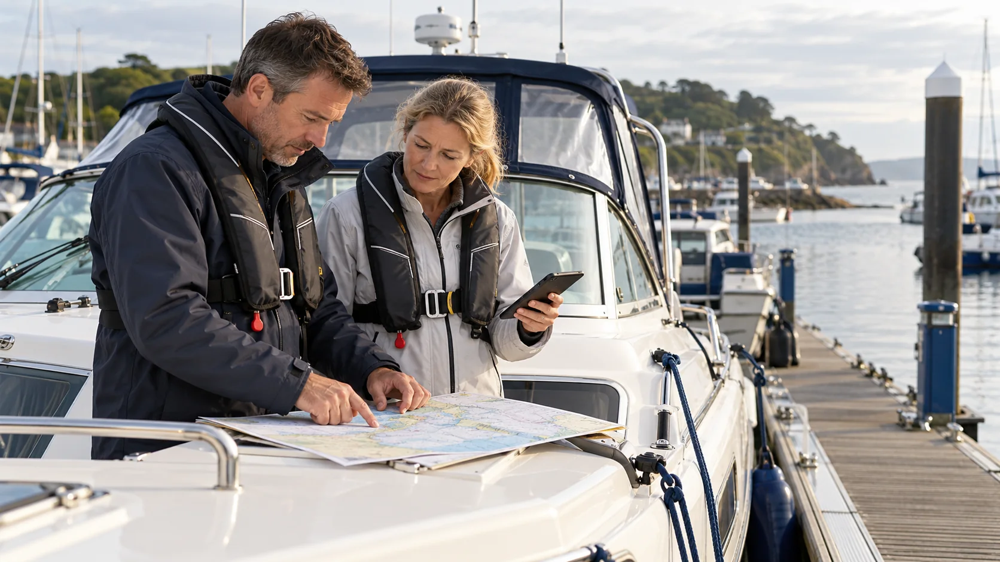

What should I learn before starting boating?
Begin with safety and basic boat terminology, then learn buoyage, lights and shapes, collision regulations and navigation. Combine theory with suitable practical instruction on the type of boat you intend to use.

A manageable learning order
- Safety: understand lifejackets, calling for help, crew briefing and what to do if plans change.
- Boat language: learn bow, stern, port, starboard, heading and position.
- Recognise the scene: study buoyage, lights, day shapes and sound signals.
- Understand encounters: learn lookout, safe speed, collision risk and give-way responsibilities.
- Plan the journey: build knowledge of charts, weather, tidal heights and streams, and alternatives.
- Know your boat: learn its systems, limitations and routine checks.
Where should I start on Helmlore?
Try the public buoyage sample first. It takes about five minutes and needs no account. When you register free, start in the library before moving into Bridge Watchkeeping. Familiarity with the symbols makes the training scenarios easier to understand.
Can I learn without owning a boat?
Yes. You can read these guides and use the learning platform before buying a boat or booking a course. Work through one subject at a time and revisit anything unfamiliar.
Does free online learning give me a qualification?
Helmlore offers independent recreational learning and practice. It does not award an RYA or MCA qualification or replace recognised practical training. Ask a suitable training centre which course matches your experience, vessel and intended waters.
Turn the reading into a practical learning plan
You do not need to memorise every subject in one sitting. Choose one topic, explain it in your own words, then answer a practice question and check the explanation. Return to the subject if you can remember an answer but cannot explain why it applies.
- Before going aboard: read the pre-departure checklist. Note what you would ask the skipper about lifejackets, communications, emergency equipment and the planned trip.
- Before taking a watch: learn the basic navigation lights and crossing responsibilities, then practise the wider Bridge Watchkeeping pathway.
- Before helping with planning: work through tidal heights and streams and the coastal passage template. Ask an experienced skipper or instructor to check your reasoning.
- Before buying: use our UK first-boat buying guide to think about intended use, ongoing costs, an independent survey and handover.
A quick self-check
Question: You have answered a set of online boating questions correctly. Does that show you can handle an unfamiliar boat safely?
Answer: No. Questions can reveal gaps in knowledge, but practical boat handling, judgement and familiarity with a particular vessel need supervised experience and suitable instruction. Use the explained answers to guide what you practise next.
Put this knowledge into practice
Try the free buoyage sample without an account, or register free to continue learning. For Bridge Watchkeeping, start in the library.
Related boating questions
- How do cardinal marks work?
- Who gives way when two boats cross?
- What do boat navigation lights mean?
- What is CEVNI and what is the test for?
- What should I check before leaving a marina?
Sources and further reading
Written by Helmlore · Updated 22 October 2026. Independent recreational learning; not an official qualification or a substitute for practical instruction.